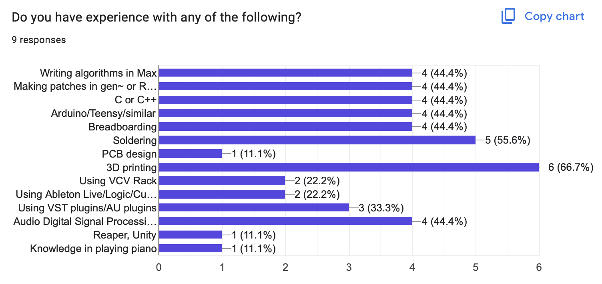
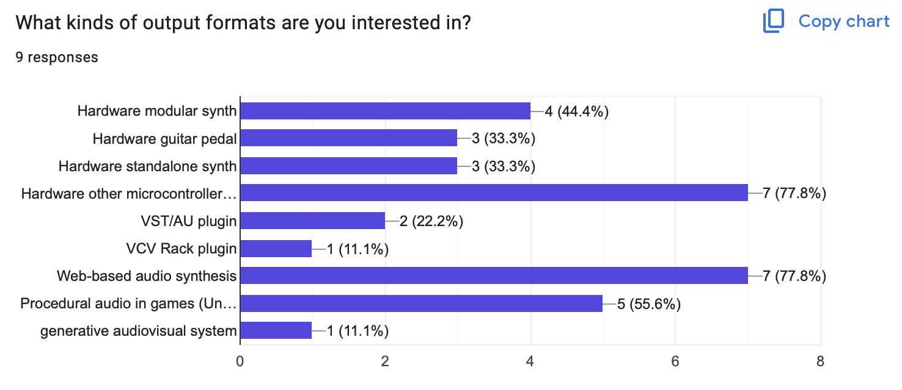

Wednesdays, 9.30am-12.20pm, Fine Arts building room ACW 103
This includes both
Instructor: Graham Wakefield g rrr w aaa a t yo rk u do t ca
For those that don’t know me, I’m a researcher and Associate Professor in Digital Media, but I’m also deeply involved in the audio software/hardware industry as a developer for audio software (Max/MSP's gen~), a developer of software for dedicated audio hardware platform (Electrosmith Daisy), and for professional audio hardware products (recently launched: Fancyyyyy K-Accumulator), all experience I’ll be bringing to the course.
Office hours: Thursdays, 9:30am-11:30am, in the Alice Lab - GCFA 309
Course material is available at or linked from this website -- bookmark it!
Assignments will be handled through e-Class
Class recordings: I often share screen and record classes via Zoom. This doesn't mean the class is hybrid (in-person attendence is required and will be accounted), but I have heard that it has been useful for many students to be able to review sessions after class hours, or to view a live class on their personal laptop screens.
This is a problem-driven and technique-focused studio course — part hackathon, part production incubator — where you take a sample-level interactive audio synthesis idea from prototypes to finished, portfolio-ready products in software and/or hardware.
You can work solo or in groups, and develop final projects in a variety of possible forms:
🎛️ Hardware — Design your own device: a standalone instrument, a guitar pedal, a modular synthesos module, or an interactive art installation. In the course of this, get to know analog hardware and build embedded digital audio systems!
🎮 Game Audio — Build adaptive sound and procedural foley systems that react live inside game engines such as Unity and Unreal.
🔌 Plugins — Build real plugins that work with the audio software or video editors people already use such as Ableton Live or VCV Rack.
🌐 Web & XR — Create generative audio for browser-based experiences, games and WebXR worlds.
Instruction includes a blend of essential topic instruction with online resources, but mainly focuses on per-project supervision.
Your progress is documented in a continuous development log, and final creative projects that can form part of a graduating portfolio.
We will work with the same tools many professional studios and hardware companies use to prototype sonic algorithms in the real world. To begin developing synthesis algorithms we will work using the gen~ environment within Cycling '74's Max.
All students have access to a license for Max supported by the course fees. License codes should be coming to all students through the department after our first attendance check. The computers in ACW 102 also have Max installed and licensed, and students can come in to use them during open lab hours. Two of the machines in DM labs also have the RNBO license that you may need for the final project.
25% Dev Log
An online log of project design and the development progress, maintained throughout the course. It could be a Google Doc, a Notion doc, a Github page -- anything that can be shared online.
25% Presentation & Discussion
Presenting work-in-progress to the group, and generous contribution to discussion.
25% Final distributable project
A functional, professional embodiment of the sonic ideas in a specific application format such as: adaptive sound generators for video games; new embedded hardware for guitar pedals, modular synthesizers, or interactive art installations; embedding in web-native projects; creating plugins for desktop software.
10% Attendance (Undergraduate only)
15% Website (Undergraduate only)
Documentation of the final project in the form of a web page with embedded video demonstration.
25% Research paper (Graduate only)
The final project implementation documented in research-appropriate writing, such as an academic paper suitable for submission to a conference such as NIME (New Instruments for Musical Expression), SMC (Sound Music Computing), or another comparable research document.
The course accompanies DATT3074 Creative Generative Audio Signal Processing, which focuses on sample-level audio synthesis algorithms.
The course complements and supports Sonic Arts stream courses in Digital Media, including DATT4071/DIGM5071/6071 and DATT3070/4070/DIGM5070. The course may also directly contribute to project development in other courses such as DATT4700, DATT4520, and EECS4441.
Sep 9 - Class Recording
Hello and welcome!
Introduction to the course
It's the 1st time to run this course, so the roadmap will be fleshed out more after I know more about what your interest foci are (after the 1st week's homework).
Context: over a century of electronic sound synthesis & instrument design, intertwining creativity & technology
Presentation:
https://docs.google.com/presentation/d/147RoDVI9CexC3cXXdqOqc6ns1jGn0L_rGpgzSky1RvA/
Attendance
Max license question
Open-ended demonstration: Modular, gen~, Oopsy & different Daisies :-)
Do some field research into reference videos about audio synthesis projects while thinking about what you would like to build. Collect the best 3 reference projects to your interest.
Add these videos to slides in this presentation
Be careful not to accidentally overwrite one of your colleagues slides!
For each one, think about how to answer these questions:
Put these answers into the slides (or presenter notes)
Can you sketch out what a hybrid between 2 or 3 of your references might look like?
Also for next week: remember to bring headphones and/or portable speakers -- we will start flashing Daisies together
Zoom meeting (same link every week)
Inspiration slides:
https://docs.google.com/presentation/d/1xG5xHPcHTgD2Z7tH2E1d0mNjhQ2WEzrlkpEth35PLUI/
Setting up the Daisy toolchain & Flashing Daisy on breadboards from Max
Let's use Github to manage our projects and collaborations. Git is not ideal for working with Max files, but there really isn't a better option.
grrrwaaa to your project)gh-pages branch to the repository to make a webpage for itIf you have never used git before, you'll need to get to know it. We don't need to get super deep, but understanding the basic idea of version control, history, repositories, commits, status/pull/push, branches and merges should be enough.
Zoom meeting (same link every week)
Github project setup checkin!

Most respondents do not own or plan to bring their own equipment or hardware to class, though a few have Arduino, ESP32, sensors, servos, and other electronic components.

(What that doesn't show, but I think is interesting, is that 8/10 of you said some kind of hardware, and almost all of you picked at least one software based output, mostly web and game engine.)
Synthesis algorithms:
Thank you, I will focus material on both hardware (gen/Daisy based) and software (primarily web-based, but also game engine, both via gen/RNBO). I will address many of the signal processing techniques here, especially delay-based effects and feedback, and lo-fi emulation/glitch, both of which mesh very nicely with generative sound and algorithmic synthesis.
Inspiration slides:
https://docs.google.com/presentation/d/1xG5xHPcHTgD2Z7tH2E1d0mNjhQ2WEzrlkpEth35PLUI/
Discussion.
Adding more breadboard components and configuring a custom JSON file.
I have 5 kits ready to go for group work.
Setting up the Daisy toolchain & Flashing Daisy on breadboards from Max
Today's patch:
And the json "mytarget.json":
{
"som": "seed",
"components": {
"knob1": {
"component": "AnalogControl",
"pin": 25
}
}
}
Zoom meeting (same link every week)
More gen~ explorations.
Examples with the Modular: flashing Daisy Patch / Patch.init / Versio... I have 6 daisy-driven modules, and could get a couple more, if we wanted to make a class project be a modular system. That modular system could also have a software equivalent using VCVRack. If we design things quickly enough, we could even manufacture PCBs!
Recordings of the weekly sessions will be here: